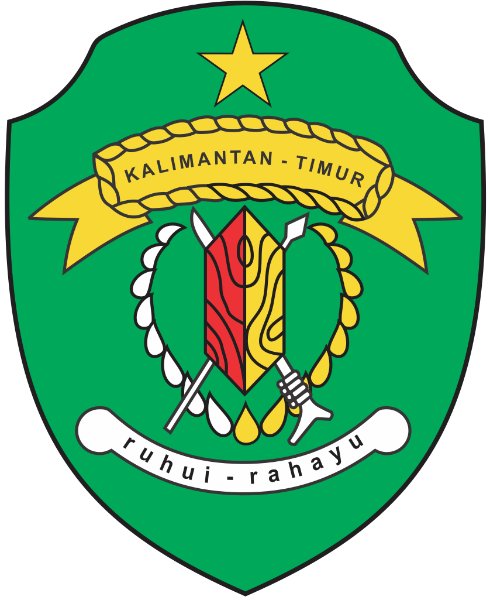

🗺️ Dashboard Kepadatan Penduduk
Kalimantan Timur
Cari
Reset
Kepadatan (Jiwa/km²)
0–2 (Sangat Rendah)
2–15 (Rendah)
15–127 (Sedang)
127–1208 (Tinggi)
>1208 (Sangat Tinggi)
Info Wilayah:
Belum ada wilayah yang dipilih